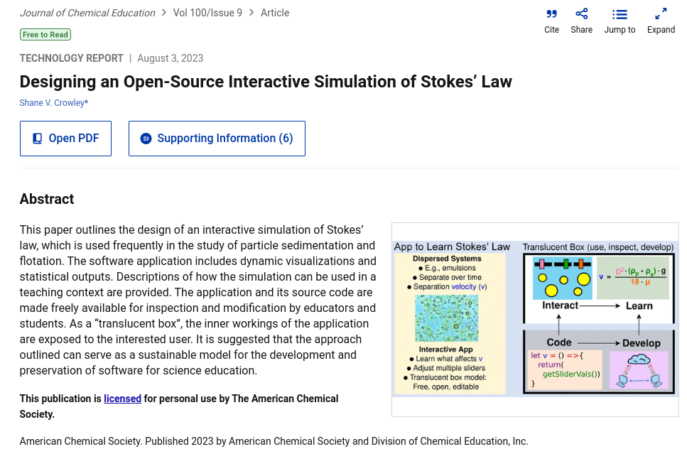
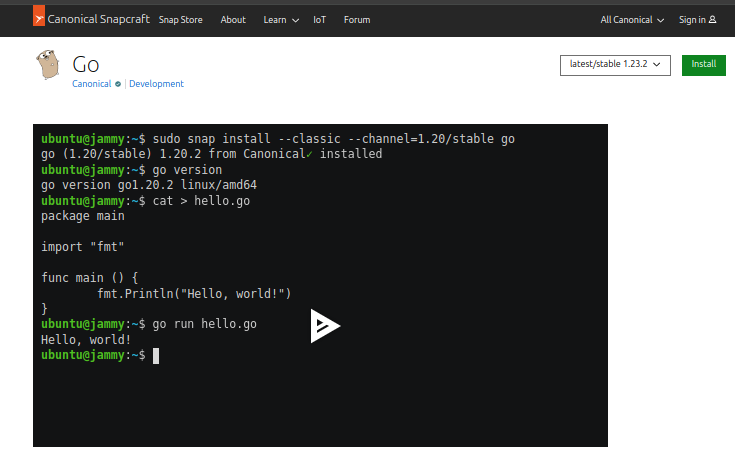
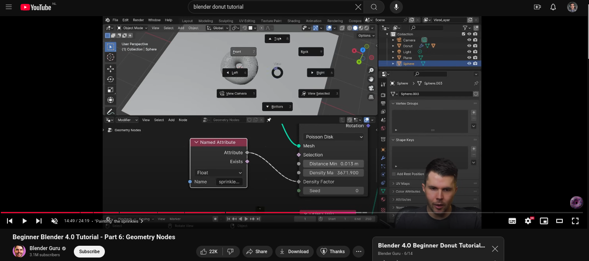
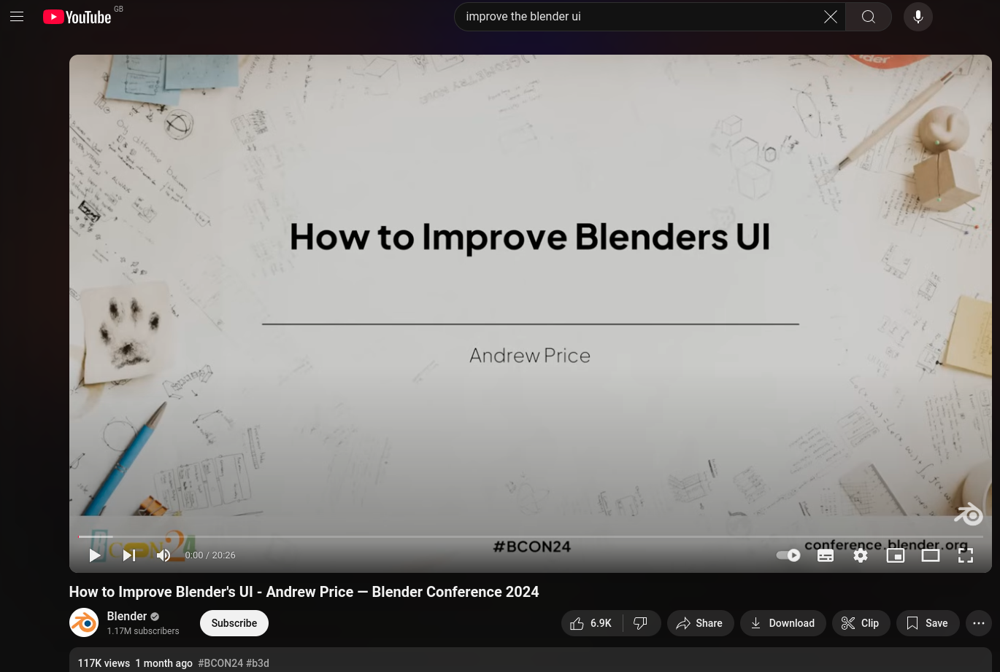
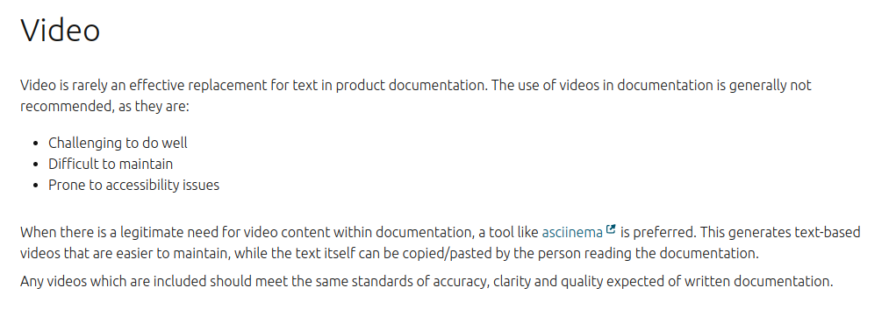
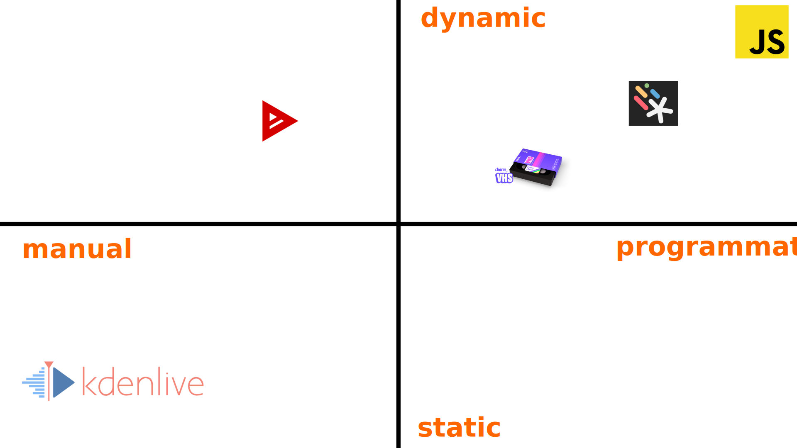
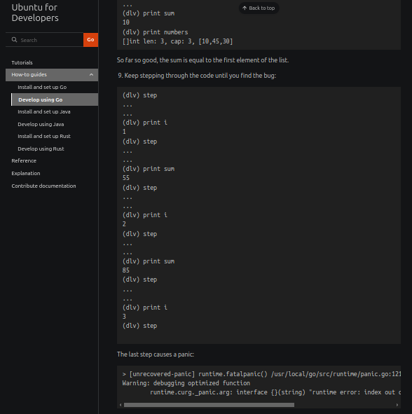

Video and documentation
Shane Crowley | technical author @ CanonicalWrite the Docs, Ireland, 2024
Repo: github.com/edibotopic/pres-vids-as-docs
Can we just make this plain text?
This could probably be plain text...
This might be more difficult...

CLIs are increasingly rich interfaces
Video as tutorial...
Abstracts
 ...a tiny invitation: "is this worth my effort?"Abstracts: a landing page...
scroll down to see an asciinema video ... compact demo of function and utilityShowing performance
Vim opening seven times and VSCode opening once Video can make speed, ease, feel and convenience more salientAbstracts: a storefront...
 ... this is what it does, and how quickly it does it: do you want it?GUIs: a more obvious use for video?
text can belabour an intuitive interface- Upload an image
- Pan with RMB
- Rotate with LMD
- Zoom with scroll
- Adjust colour with picker
- Toggle render options
- Choose a 3D format
- ...
- ...
Complex interfaces and skill acquisition


As of today, Blender still often needs to be taught through demonstration
CLIs can be complex too...
PS C:\Users\shane> ubuntu.exe
shane@ubuntu-wsl:~$
shane@ubuntu-wsl:~$ ssh shane@ubuntu-server
shane@ubuntu-server:~$ multipass shell ubuntu-vm
shane@ubuntu-vm:~$ exit
shane@ubuntu-server:~$ exit
shane@ubuntu-wsl:~$ exit
PS C:\Users\shane>
Multiple changes of context (host OS, WSL instance, server, remote VM)
Cause and effect:
source > UI > file tree > database
Our current guidelines...
 ... there is more thinking to be done on this topicTooling
not all video creation tools share the same functionality
Tooling: Asciinema
play video, copy text and paste below
[2.313985, "o", "\u001b[?2004h\u001b[1;38;5;140m~\u001b[1;38;5;620m\u001b[1;38;5;180m ❯ \u001b[00m"]
[2.620703, "o", "c"]
[2.794014, "o", "d"]
[2.879457, "o", " "]
[3.112576, "o", "t"]
[3.199156, "o", "e"]
[3.344174, "o", "s"]
[3.438923, "o", "t"]
[3.762072, "o", "\r\n\u001b[?2004l\r"]
[3.778942, "o", "\u001b[?2004h\u001b[1;38;5;140m~/test\u001b[1;38;5;620m\u001b[1;38;5;180m ❯ \u001b[00m"]
[4.716887, "o", "e"]
[4.879944, "o", "c"]
[4.967376, "o", "h"]
[5.147111, "o", "o"]
[5.351878, "o", " "]
[5.939624, "o", "\""]
[6.87844, "o", "p"]
[6.988062, "o", "r"]
[7.202012, "o", "i"]
[7.24857, "o", "n"]
[7.309504, "o", "t"]
[8.288656, "o", "("]
[9.015461, "o", "'"]
[9.367201, "o", "h"]
[9.497635, "o", "e"]
[9.828605, "o", "l"]
[9.961116, "o", "l"]
[10.119946, "o", "o"]
[10.513969, "o", " "]
[10.61583, "o", "w"]
[10.720114, "o", "o"]
[10.811695, "o", "r"]
[10.891264, "o", "l"]
[10.985645, "o", "d"]
[11.932508, "o", "'"]
[12.631572, "o", ")"]
[14.300431, "o", "\""]
[14.685552, "o", " "]
Asciinema source not very readable or editable
Tooling: VHS
# test.tape
Type "mkdir test"
Sleep 500ms
Enter
Type "cd test"
Enter
Sleep 1s
Type `echo 'print("hello world")' > test.py`
Sleep 1s
Enter
Sleep 2s
Type "python3 test.py"
Sleep 500ms
Enter
Sleep 2.5s
Source is logical, readable and editable
Video generation can also be automated...
Automate testing with VHS
Example from Canonical's authd devs- Generate golden file
- Simulate user interaction
- Diff output and golden files
- Review video to debug
- Use video/gif in documentation
Process:
Tooling: Motion Canvas
- Programmable motion graphics in JS/TS
- Aimed at development use cases
- Includes built-in previewer/editor
...
...
yield* all(
codeLeft().code.append(`dlv debug main.go`),
codeRight().code.append(`package main`),
codeRight().code.append('\n', 1.6),
codeRight().code.append('\nfunc calculateAverage(numbers []int) float64 {', 1.6),
);
...
...
Integrating actions, code, outputs, errors
We have a tendency to linearise this information...Text-based version...
Tooling: Manim
- Python library
- Written and popularised by 3Blue1Brown
- Targeted at mathematical exposition
class CodeFromString(Scene):
def construct(self):
code = '''
$ multipass find
$ multipass launch noble
Launched: coherent-trumpetfish
$
'''
Where does video fit in this framework?
Would you watch a...
reference video???
Would you watch a...
reference video???
Probably not: video excels at demonstration and integration